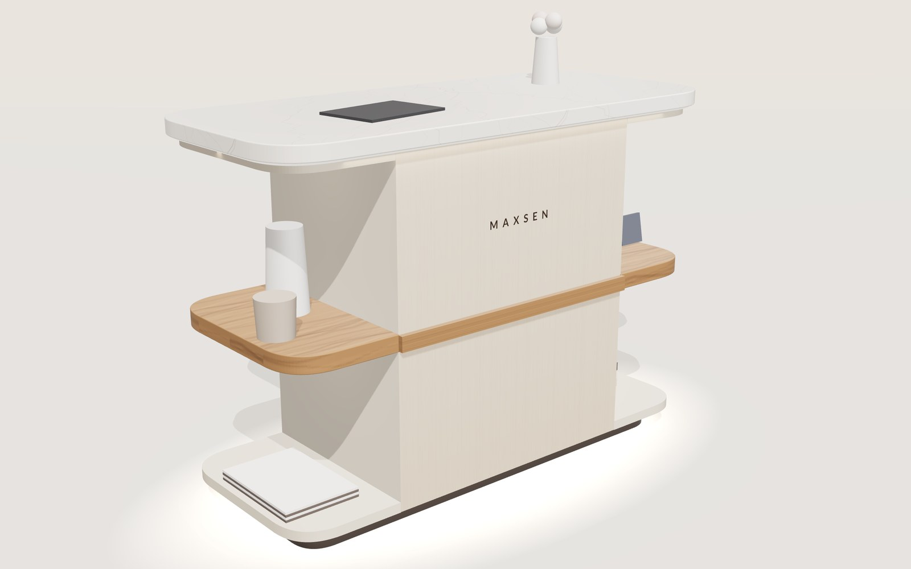
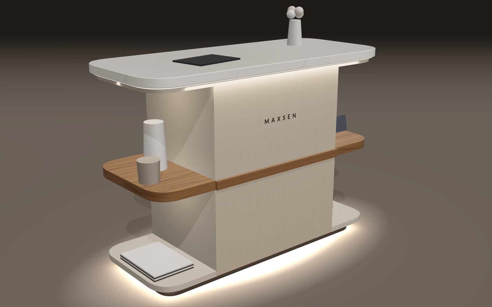
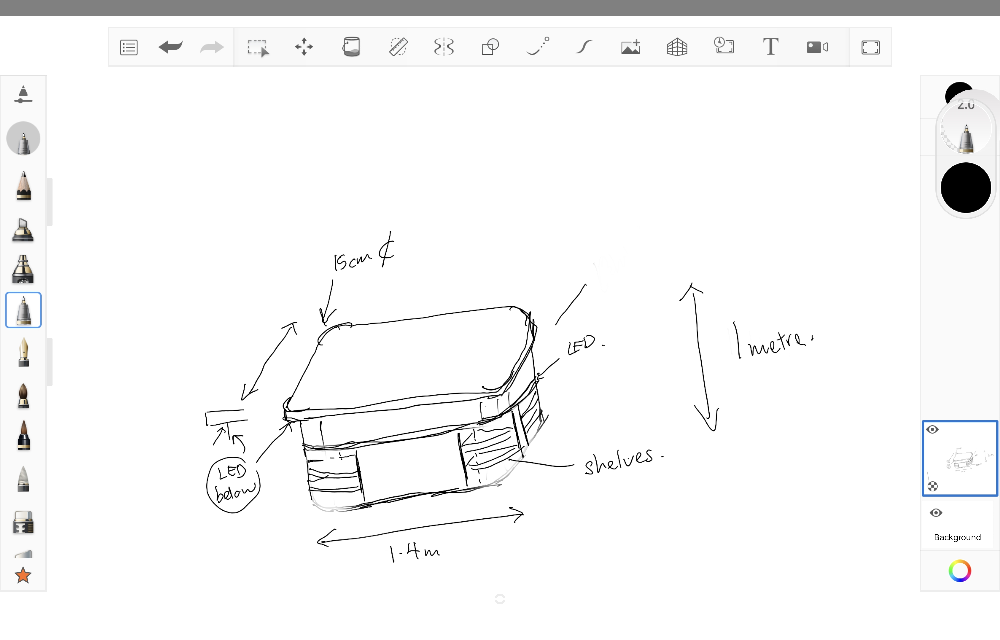
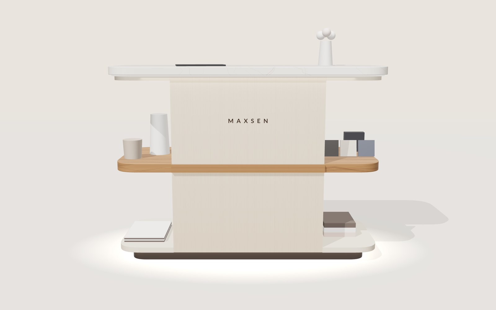
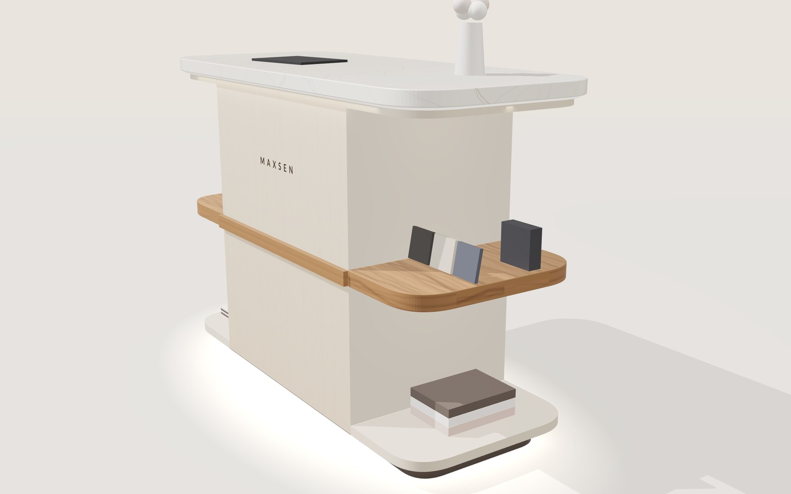
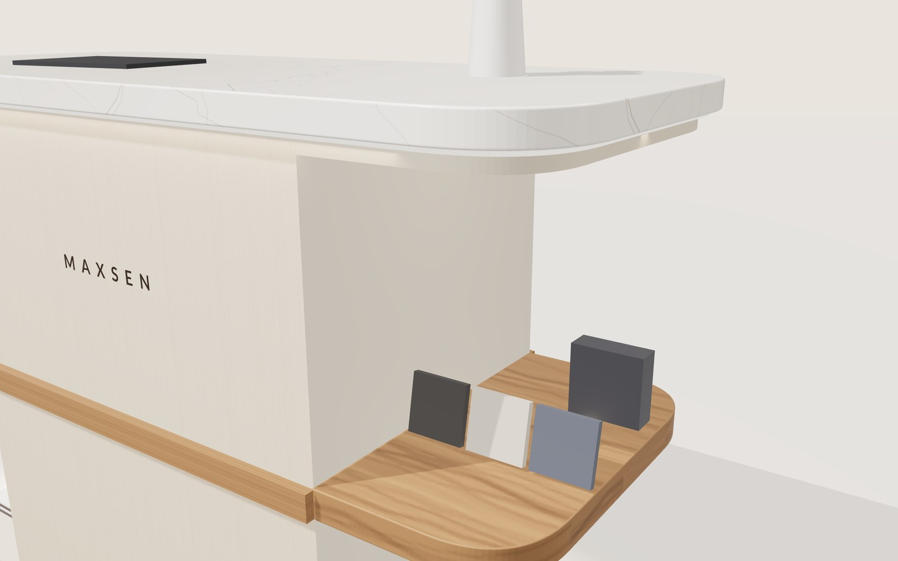
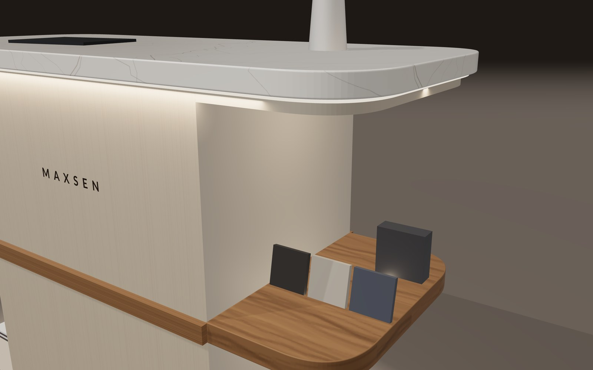

A 1.4 m standing counter with a soft-cornered stone top, a closed centre carrying the Maxsen wordmark, and open shelves that wrap around both ends. One oak line runs across the middle, from shelf to shelf. LED light runs under the top and under the base, so the whole piece seems to float.


Everything marked "from the sketch" is what you drew. The rest are my assumptions, which you can change.

| Note on the sketch | What I modelled | |
|---|---|---|
| 1.4 m | 1,400 mm long | From the sketch |
| 1 metre | 1,000 mm high to the top surface | From the sketch |
| Depth arrow, no number | 600 mm deep | Assumed |
| 15 cm at the corner | A 150 mm radius on all four corners of the top | Assumed |
| LED, under the top edge | The top overhangs the body by 30 mm, with an LED strip hidden underneath | From the sketch |
| LED below | A bronze base set back 60 mm, with an LED line that lights the floor | From the sketch |
| Shelves | Two open bays at each end, wrapping around the rounded corners, with no posts | From the sketch |
| Wood across the centre | An oak shelf at each end, 40 mm thick, running on as an oak band across the front and back of the centre, at 480–520 mm | Your change |
| Centre panel | Closed, 760 mm wide, with the Maxsen wordmark | From the sketch |
| Materials | Marble-look stone top, champagne laminate body, oak line, bronze base | Assumed |




The shelves and the closed centre fill the space under the top, so nobody can sit with their knees under it. That makes it a standing counter, and 1,000 mm is the standard height for one: a visitor can rest an arm or an iPad on it while talking to staff face to face.
| Height | What it suits | For this table |
|---|---|---|
| 750 | Sitting on normal chairs, like the booth's round tables | Too low: there is no knee room, so people would bend down to it |
| 900 | Kitchen worktops | Works, but feels low for standing conversations |
| 1,000 | Standing counters and showroom tables | Recommended. Comfortable to lean on, and well under the booth's 1.8 m walls |
| 1,050–1,100 | Reception and bar counters, with tall stools | Only if you want people to perch on stools |